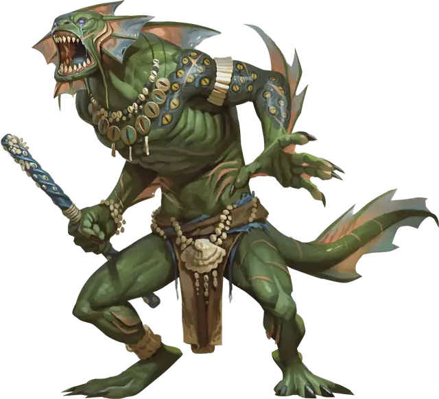

Сахуагин колдун Ук'отоа
Sahuagin Warlock of Uk'otoa
Средний Гуманоид (Сахуагин), нейтрально-злой

Класс Доспеха 14 (природный доспех)
Хиты 22 (5к8)
Скорость 30 футов, плавая 30 футов
| мод | спас | ||
|---|---|---|---|
| СИЛ | 14 | +2 | +2 |
| ЛОВ | 10 | +0 | +0 |
| ТЕЛ | 11 | +0 | +0 |
| мод | спас | ||
|---|---|---|---|
| ИНТ | 8 | −1 | −1 |
| МДР | 8 | −1 | −1 |
| ХАР | 16 | +3 | +3 |
Навыки Магия +1, Убеждение +5
Чувства тёмное зрение 120 футов, пассивное Восприятие 9
Языки Общий, Сахуагинский
Опасность 3 (700 опыта)
Бонус мастерства +2
Особенности
Кровавое бешенство. Сахуагин совершает с преимуществом броски рукопашных атак по существам, у которых хиты ниже максимума.
Ограниченная амфибийность. Сахуагин может дышать и воздухом и под водой, но чтобы не задохнуться, ей нужно погружаться в воду хотя бы раз каждые 4 часа.
Акулья телепатия. Сахуагин может магическим образом командовать всеми акулами, находящимися в пределах 120 футов от нее, при помощи ограниченной телепатии.
Врожденное колдовство. Базовой характеристикой колдуна является Харизмой (Сл спасброска от заклинания 13, +5 к попаданию атаками заклинаниями). Он может накладывать следующие заклинания, без использования материальных компонентов:
• Неограниченно: мистический заряд [eldritch blast] (см."Действия" ниже), малая иллюзия [minor illusion];
• 1/день каждое: доспех Агатиса [armor of Agathys], руки Хадара [arms of Hadar], контрзаклинание [counterspell], корона безумия [crown of madness], невидимость [invisibility], голод Хадара [hunger of Hadar].
Жезл возмездия. Сахуагины колдуны Ук'отоа, обладающие исключительным потенциалом в глазах левиафана повелителя, получают жезл возмездия [rod of Retribution] в дополнение к обычному дару Ук'отоа - Мечу глубин. Сахуагин колдун Ук'отоа, держащий этот жезл, получает следующую реакцию:
Возмездие (3 /день). Когда существо, которое колдун может видеть в пределах 60 футов от него, наносит урон колдуну, это существо должно совершить спасбросок Ловкости Сл 13, получая 11 (2к10) урона электричество при провале или половину этого урона в случае успеха.
Действия
Мультиатака. Сахуагин совершает две атаки: одну Укусом, и одну Мечом глубин.
Укус. . Рукопашная атака оружием: +4 к попаданию, досягаемость 5 футов, одна цель. Попадание: 4 (1к4 + 2) колющего урона.
Меч глубин. Рукопашная атака оружием: +4 к попаданию, досягаемость 5 футов, одна цель. Попадание: 7 (1к10 + 2) рубящего урона, и если целью является существо, оно должно совершить спасбросок Телосложения Сл 13, иначе начнёт задыхаться. Задыхающееся существо становится недееспособным до конца своего следующего хода, когда действие эффекта на нём заканчивается.
Мистический заряд (Заговор). Дальнобойная атака заклинанием: +5 к попаданию, дистанция 120 футов, одно существо. Попадание: 5 (1к10) урона силовым полем.
Описание
Дремлющий левиафан Ук'отоа охотится за страхами и амбициях гуманоидов, которые отваживаются исследовать глубины Люцидианского океана. Бесчисленные поселения сахуагинов населяют неизведанные участки воды вдоль Звериного побережья, и самые амбициозные из них часто слышат зов левиафана в своих снах, призывающий их принять его силу и использовать её для достижения своих пропитанных кровью мечтаний.
Сахуагины, которые откликаются на зов Ук'отоа, как правило, имеют одну общую цель: отомстить сухопутным жителям Конкорда Кловиса за то, что они осмелились плавать по океанам, которые им не принадлежат. По мере того, как эти последователи получают тёмные дары от своего повелителя левиафана, другие сахуагины начинают собираться на их стороне, привлеченные их демонстрацией силы и ищущие свой собственный путь к власти. Со временем эти колдуны, в конечном итоге, становятся пустой оболочкой, простым вместилищем силы Ук'отоа и марионетками, которыми дремлющий левиафан может управлять, как ему заблагорассудится.